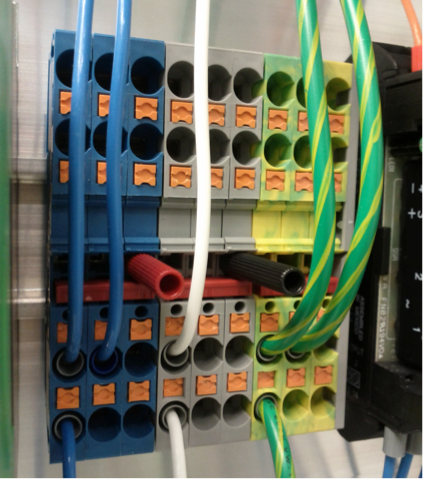
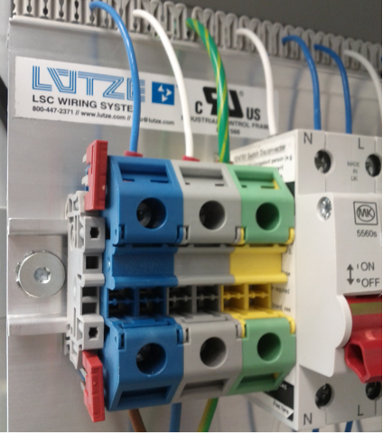

8.2. Field Device Interface Technology¶
Industrial fieldbuses have in the last few years moved from serial based protocols like CAN or Profibus to Ethernet-based protocols. Ethernet-based protocols are a successor of the VME backplanes used in previous generation telescopes and have become one of the most common ways to connect input/output modules with control processors, especially in industrial automation. These protocols are based on industrial standards, which tend to be long-lived and very stable, making them an ideal choice for the time span of the GMT project. Among the different alternatives, EtherCAT is the most attractive: in addition to being an ISO/IEC standard, several implementations of its components (e.g., master and slave stacks) are available on many platforms, including open source alternatives.
EtherCAT is used to connect hardware devices (e.g., sensors and actuators) to the fieldbus via Input/Output modules (IOModules). These modules implement device profile standards based on the CAN Open specifications, for example the CiA 402: CANopen device profile for drives and motion control (internationally standardized in IEC 61800-7-201 and IEC 61800-7-301). In this way, the interface protocol with local controllers is defined by standard profiles, often available as XML files, thereby guaranteeing the availability of components from different vendors. Interfaces based on industrial protocols reduce the systems engineering burden and greatly facilitate the definition of control interfaces.
The field interface technology is greatly influenced by industrial automation devices, which are becoming increasingly smart, as low-level motion controllers are embedded directly in the field devices, reducing the need for separate external control loops. With many control loops closed locally at the drives level, the control computers in the electronic cabinets can be drastically reduced in size and in many cases might not be needed at all.
The SWCS field device interface requirement is given by ELS-8030, Field Bus Standard: The standard field bus shall be EtherCAT.
8.2.1. EtherCAT¶
The GMT standard Ethernet fieldbus is EtherCAT, which is used to connect field devices to DCCs (both PCs and PLCs) through IOModules. In general, all the deployment cases can be grouped in:
- DCCs connected to field devices via slave IOModules. This case is the most common and is supported by a variety of different vendors. A very frequent instance is, for example, Digital/Analog EtherCAT modules and motor drivers – also called smart drives – which from a logical perspective are considered IOModules, too.
- DCCs connected to field devices directly. In this case the slave field device has a fieldbus interface built in, for example, in the case of EtherCAT encoders.
The Fieldbus cabling between DCCs and the first bus coupler is Ethernet. The connection between the first bus coupler installed in the electronics room and the rest of the bus couplers in the bus is optical fiber. This is done via an optical fiber trunk cable to a distribution panel in a control cabinet inside the telescope chamber. The control cabinets are located in strategic places of the telescope structure. Inside the cabinet the field bus cable is converted from fiber to copper. The cabling between the control cabinet and the device power cabinets is done using CAT5e/CAT6 industrial Ethernet cables that are robust, cost effective, and provide a reliable connection technology. The IOModules are connected to DCCs using a cable redundancy arrangement. The status of DC power supplies and their corresponding protections are monitored, and potential free contacts are provided for the wiring in the GMT Power cabinets. The master fieldbus DCC uses the IgH EtherCAT master in order to communicate with the IOModules connected to the fieldbus.
GMT has performed extensive testing connecting EtherCAT remote IOModules and motion drives with real-time computers via fiber optics [Bec12c]. The tests, using cycle times between 0.1 and 0.5 milliseconds (time to read inputs, process them and write outputs from the real time computer), have shown a remarkable stability. This solution makes it possible to locate the control computers in the electronics room instead of the telescope structure. The consequences of this arrangement are: less heat dissipation, space and mass required in the telescope enclosure, major cost reduction, and easier maintenance. The Figure below shows an example of how GMT will deploy the DCC, IOModules and field devices for the case of the Acquisition and Guiding Wavefront Sensor System.

Fig. 8.4 EtherCAT topology sample for the Acquisition and Guiding Wavefront Sensor System.
GMT will adopt the CiA 402 CANopen device profile for drives and motion control, which is suitable for frequency inverters, servo controllers, and stepper motors. It is internationally standardized in IEC 61800-7-163 and IEC 61800-7-20164. The fact that the CiA402 profile type directly maps to EtherCAT network technology in the IEC 61800-7-30165 standard speaks to the robustness and long term stability of EtherCAT technology.
8.2.2. Electronic Cabinets¶
GMT has defined a Standard Electronics Cabinet (SEC) to be used by all subsystems, to the extent possible, for the integration of their electronics. The SEC includes a cooling system to maintain the air temperature inside the cabinet near ambient and a power distribution unit for providing electrical power to the subsystems. The SECs will be purchased, modified, and configured by GMT and will be provided to the subsystem teams, as requested, for integration and assembly of their electronics. Detailed specifications of the SEC with drawings and envelopes, as well as wiring standards for GMT are specified in the document GMT Electronics Standards [Sawy13a].
8.2.3. Terminal Blocks¶
Terminal Block technology plays an important role in the GMT design. Robust wiring connections are essential to ensuring reliable and stable communication between field elements and the electronics. Among the many variants existing in the market today, the Push-In Technology (PIT) is preferred. PIT allows connections whereby solid conductors or conductors with ferrules directly insert into the terminal block. Only a flat-head screwdriver is necessary to insert the wire and, in many cases, requires no tools at all. With PIT’s latch function there is no need for special tools; using the integrated actuation lever one can release the connected conductors quickly and easily. Vibration, shock, and corrosion resistances are all covered by industrial standards compliance. A few other Terminal Block features that are highly useful are double function shafts that allow plug- in bridges and openings for test point contacts. See the figure below for a couple of examples on the PIT terminal block technology with bridges and test points adopted by GMT.
In the above Figure, Terminal Blocks in the SEC prototype at GMT. (Left) Double function shafts have plug-in bridges and test contacts installed. (Right) End clamp with auxiliary slot for storing bridges and double function shafts on the main power terminal blocks.
|  |  |
{kind=link}
{kind=link}
8.2.4. Integrated Prototypes¶
Several integrated tests have been performed at GMT with lab-assembled prototypes. This implementation is set up with Linux servers running the EtherCAT master, IO terminals from different vendors, custom made slaves, drives commanding different types of motors (AC and steppers) and several field sensors, like RTDs, PT100s, and load cells. The Figure below (left) shows the first control panel prototype receiving the EtherCAT communications from the DCCs over fiber with bus couplers, IOModules and motor drives in a daisy-chain topology. The right-hand-side also shows the second-generation control prototype, adding an Industrial PC with local control of the electrical power startup sequence and load cell measurements, all with a bus/tree topology. The Figure below shows the current prototype, which includes all of the previous features in an electronics panel housed by a Rittal TS8 cabinet. This is the design that drove the concept of GMT standard electronics cabinet (SEC). Short cycle times in the order of 100us have been achieved successfully with this setup.

Fig. 8.5 (Left) First and (Right) Second Generation Control Panel Prototypes
Fig. 8.6 Latest Control Panel Prototype Housed in a Rittal TS8 Enclosure.